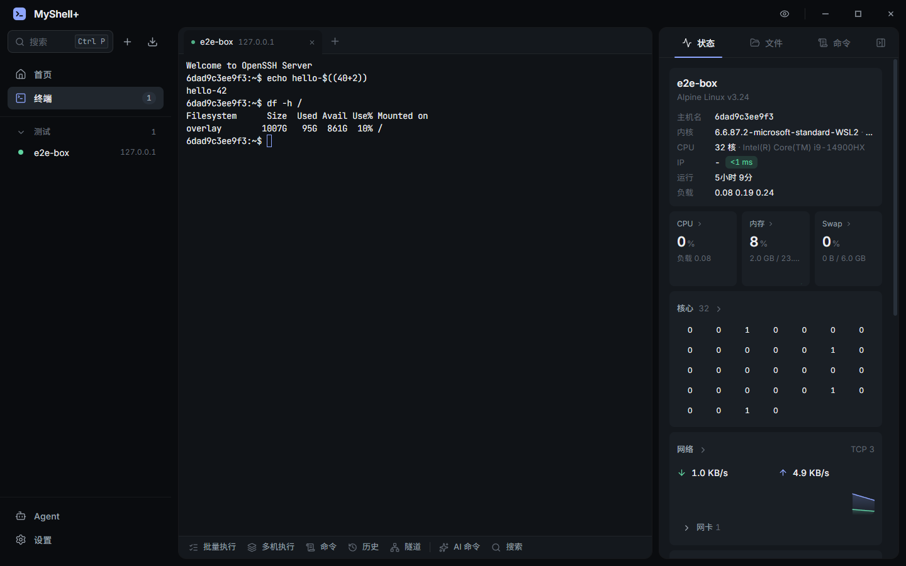
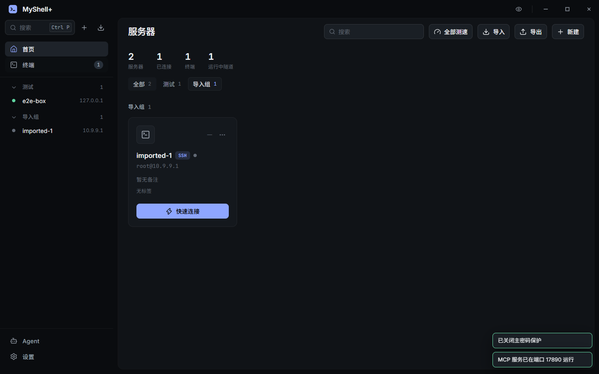

安全、稳定、
可被 Agent 操作的 SSH 客户端
连接、密钥和隧道都在 Rust 核心里，界面重载不断线。内置 MCP 服务，Claude Code 可以直接操作你的服务器。

功能
终端
多标签、WebGL 渲染、搜索、语法高亮、断线重连。
命令预测
历史、收藏和常用命令实时补全，输入中文直接转命令。
AI 命令
Ctrl+K 用自然语言生成命令，选中输出让 AI 解释。支持 Claude 与 OpenAI 兼容服务。
状态面板
CPU、内存、负载、网络、磁盘 IO、Top 进程，卡片可自定义。
总览
所有服务器一屏实时状态，按分组批量连接。
SFTP 文件
拖拽上传下载、在线编辑、修改权限。
隧道
本地 -L、远程 -R、动态 SOCKS5 -D，可开机自动启动。
多机执行
多台服务器并发执行，按主机查看输出，失败重试。
全局搜索
Ctrl+P 搜索服务器、终端、命令、历史、隧道和设置。
导入
OpenSSH config、PuTTY、Xshell、MobaXterm、FinalShell、1Password、CSV。
SSH Agent
支持 1Password 与 Windows OpenSSH Agent，私钥不离开 Agent。
全局热键
Ctrl+Alt+M 显示/隐藏窗口，按住 Alt+` 切换终端。
截图

安全
- 全部加密存储：密码、私钥、API Key 用主密码派生密钥加密（Argon2id + XChaCha20-Poly1305），磁盘上只有密文。
- 设备绑定：可选“在此设备记住”，数据密钥由 Windows DPAPI 保护。
- 指纹校验：首次连接确认主机指纹，指纹变化时告警。
- Agent 权限：按服务器设置禁止 / 只读 / 每次询问 / 自动，高风险命令仍需确认，全部操作写审计日志。
- MCP 仅本机：只监听 127.0.0.1，需要 Bearer Token，拒绝浏览器来源请求。
稳定
- 界面与连接分离：SSH、终端、隧道都运行在 Rust 进程里，界面只负责显示。
- 重载回放：每个会话 512KB 环形缓冲，界面重载后自动接上并回放输出。
- 输出合并：约 60fps 合并推送，大量输出不会压垮界面。
- 看门狗：界面 90 秒无响应时自动重载，连接不受影响。
- 内存稳定：图表保留 60 个采样点，终端回滚 5000 行，长时间运行不膨胀。
接入 Agent
在应用的 Agent 页开启 MCP 服务，复制命令到 Claude Code：
claude mcp add --transport http myshellplus \
http://127.0.0.1:17890/mcp \
--header "Authorization: Bearer <token>"
list_hosts | 列出服务器 |
run_command | 执行命令 |
batch_run | 多机执行 |
host_status | 主机状态 |
list_dir read_file write_file | 文件操作 |
list_terminals read_terminal send_terminal | 操作已打开的终端 |